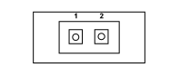

G045A AIR CONDITIONING/HEATER CONTROLS LIGHT (AIR CONDITIONING)
- Path
- Electrical equipment > 3 CONNECTORS > G INTERIOR LIGHTS > G045 AIR CONDITIONING/HEATER CONTROLS LIGHT > G045A AIR CONDITIONING/HEATER CONTROLS LIGHT (AIR CONDITIONING)
- Kind
- connector pinout (pin -> wire colour -> other end)
- Applies to
- all engines; all production periods; only with equipment: Manual Air Conditioning
- Interactive page
- https://sloeber94.github.io/elrnDB-fPnd/en/#/169003203
Applies to: all engines; all production periods; only with equipment: Manual Air Conditioning

Wiring | Colour |
|---|---|
- |
Pin | Cable | Destination | |||
|---|---|---|---|---|---|
Sec.. | Colour | Node | Connect. | Pin | |
1 | 0,5 | NZ (black with violet stripe) | X | 1 | |
4 | |||||
See G045B AIR CONDITIONING/HEATER CONTROLS LIGHT (AIR CONDITIONING) | 1 | ||||
3 | |||||
2 | 0,5 | GR (yellow with red stripe) | X | See G045B AIR CONDITIONING/HEATER CONTROLS LIGHT (AIR CONDITIONING) | 2 |
1 | |||||
Topics linked from this page (5)
- 65 AIR CONDITIONING
- D008 AIR CONDITIONING-HEATER FRONT COUPLING
- G045B AIR CONDITIONING/HEATER CONTROLS LIGHT (AIR CONDITIONING)
- H080A AIR CONDITIONING CONTROLS (AIR CONDITIONING)
- H080B AIR CONDITIONING CONTROLS (AIR CONDITIONING)
Topics that link to this page (7)
- D008 AIR CONDITIONING-HEATER FRONT COUPLING (AIR CONDITIONING)
- D008 AIR CONDITIONING-HEATER FRONT COUPLING (HEATER)
- G045B AIR CONDITIONING/HEATER CONTROLS LIGHT (AIR CONDITIONING)
- G045B AIR CONDITIONING/HEATER CONTROLS LIGHT (HEATER)
- H080 AIR CONDITIONING CONTROLS (HEATER)
- H080A AIR CONDITIONING CONTROLS (AIR CONDITIONING)
- H080B AIR CONDITIONING CONTROLS (AIR CONDITIONING)